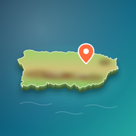

Puerto Rico 3D
Cargando relieve y municipios
- Población 2020
- Densidad
- Área terrestre
- Área de agua
- Altura máxima
- Viviendas
Colinda con
Barrios
Comunidades
Capas
Regiones
Edificios 3D: © OpenStreetMap · Estilos PolyMap (MIT) · Límites: U.S. Census Bureau · Sectores y rutas: © OpenStreetMap · Clima: Open-Meteo · Relieve: DEM 30 m (USGS), render de izette1/SWCI
Toca el punto de salida
Indicaciones
Comparar pueblos
Siguiendo tu ubicación
Toca el mapa para marcar puntos